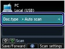
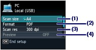
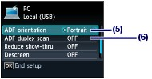
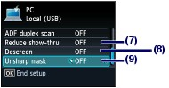

You can save or forward scanned data to the computer with the USB cable or via a network.
This section describes the procedure to detect the type of original automatically with Auto scan, and save the scanned data to the computer connecting with the USB cable, according to the settings specified with MP Navigator EX.
For operations to save scanned data on a memory card or USB flash drive and to scan originals from the computer, refer to the on-screen manual: Advanced Guide.
 Important Important
|
 Note Note
For details, refer to the on-screen manual: Advanced Guide. |
 Preparing for Scanning with the Operation Panel
Preparing for Scanning with the Operation PanelBefore scanning originals, check the following:
 Are the necessary software applications (MP Drivers and MP Navigator EX) installed?
Are the necessary software applications (MP Drivers and MP Navigator EX) installed?
Install MP Drivers and MP Navigator EX from the Setup CD-ROM when they have not been installed or have been uninstalled. To install MP Drivers and MP Navigator EX, select MP Drivers and MP Navigator EX in Custom Install.
Are the settings for saving data scanned with Auto scan specified in MP Navigator EX?
When you save scanned data to the computer with Auto scan using the Operation Panel, you can specify the settings for saving scanned data in Preferences of MP Navigator EX.
For details on the settings, refer to the on-screen manual: Advanced Guide.
Does the original to be scanned meet the requirements for the original to be loaded on the Platen Glass or in the ADF?
For details, see Originals You Can Load.
 If the Machine Is Connected via USB
If the Machine Is Connected via USBConfirm that the connection with USB cable between the machine and the computer is physically secure.
If the Machine Is Connected over a NetworkWhen you use a computer connected over a network, check the following:
Confirm that the machine and computer are correctly connected to the network.
Is IJ Network Scanner Selector EX in Login Items of Accounts in System Preferences?
Is the machine selected in the settings screen of IJ Network Scanner Selector EX?
Is the Enables scanning from the operation panel check box selected in Preferences of the IJ Network Scanner Selector EX menu?
For details, refer to the instructions for scanning over a network in the on-screen manual: Advanced Guide.
Saving Scanned Data to the ComputerSelect the scan operation.
(1) Make sure that the power is turned on.
See Operation Panel.
(2) Press the SCAN button.
If you have ever specified a computer for saving scanned data, go to (5).
(3) Use the  or
or  button to select PC , and press the OK button.
button to select PC , and press the OK button.
The computer selection screen will appear.
Besides saving scanned data on the computer, you can save them on a memory card or USB flash drive, or attach them to E-mail on the computer.
For details, refer to the on-screen manual: Advanced Guide.
(4) Select the computer to save or forward scanned data, and press the OK button.
Here we select Local (USB).
| Note
|
(5) Select the document type.
Here we select Auto scan.

| Note
|
Load an original on the Platen Glass or in the ADF.
See Loading Originals.
For details on the types and sizes of the original which can be scanned, see Originals You Can Load.
| Note
|
Press the Color or Black button to start scanning.
MP Navigator EX will be started, and the scanned data will be saved to the computer according to the settings specified with MP Navigator EX.
Scanning document... will appear while scanning the original.
When scanning from the Platen Glass, the machine automatically detects whether the type of a scanned data is photo or document and the scanned data is saved to a single file on the computer according to the settings specified with MP Navigator EX (JPEG/Exif, TIFF, PDF).
When scanning from the ADF, the scanned data is saved as a document on the computer. If PDF is specified for the saving format in MP Navigator EX, all documents loaded in the ADF are saved to a single file.
Remove the original on the Platen Glass or the Document Output Slot after scanning is completed.
| Important
|
| Note
If the original is not scanned correctly, select Document or Photo for Doc.type, specify the scan settings such as Scan size to match the original, then scan it again.
- Scanned data saved by selecting Memory card or USB flash drive for the saving device and selecting PDF or Compact PDF for the data format - Scanned data saved as a PDF file with MP Navigator EX For details, refer to the on-screen manual: Advanced Guide.
Select Device user settings in Device settings on the setup menu screen, then specify it in Two-sided paper output setting. |
Changing the SettingsPress the right Function button to select Scan settings on the scan standby screen when Document or Photo is selected for Doc.type. You can select the item, such as scan size, data format, or resolution, and change the setting.
For the setting operation, see Basic Operation on the Settings Screen.
The setting items described below are available when Document is selected for Doc.type.
 |
|
 |
|
 |
(1) Scan size*1
Select the size of the original to be scanned: A4, 4"x6" (10x15cm), etc. When Auto crop is selected, the size of the original is detected automatically.
(2) Format
Select the data format to save the scanned data: PDF, Compact PDF, TIFF, or JPEG.
(3) Scan res (Scan resolution)
Select the resolution at which to scan the original: 75 dpi, 150 dpi, 300 dpi, or 600 dpi.
(4) Preview
Display a preview of the scanned image on the LCD when Memory card or USB flash drive is selected in Save/Forward and the original is scanned from the Platen Glass.
(5) ADF orientation*2, *3
Select the orientation of the original to be scanned from the ADF: Portrait or Landscp..
(6) ADF duplex scan*2, *3
Select whether or not to scan both sides of original in the ADF. Select ON to scan both sides of original or OFF to scan a single side of original. When ON is selected, press the right Function button to select Advanced and specify the staple side of both sided originals.
(7) Reduce show-thru*2
Reduce show-through of the opposite side of a text document, or lighten the color of recycled paper, newspaper, etc.
(8) Descreen*2
Reduce the moire effect when uneven gradations or stripe patterns appear on the original to be scanned.
(9) Unsharp mask
Emphasize outlines of subjects and sharpen the image when the original image is not clear.
*1 You can select Multi crop when Photo is selected for Doc.type. Then, when two or more photos are loaded on the Platen Glass, each photo is scanned as an individual image.
*2 This setting item is not available when Photo is selected for Doc.type.
*3 You can specify only ADF orientation and ADF duplex scan when Auto scan is selected for Doc.type.
| Note
For details, refer to the on-screen manual: Advanced Guide. |